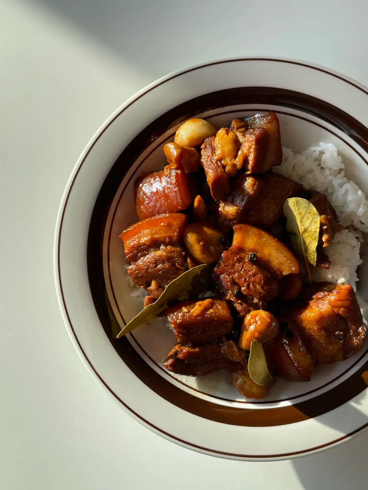

Pork Adobo
Quick and Easy Filipino comfort dish
Ingredients
- 600 g pork belly
- 1/2 cup soy sauce
- 1/2 cup vinegar
- shit ton of garlic
- lots of black peppercorns
- 5 Bay leaves
- Oil
Directions
- Cut pork belly into cube sized pieces
- Prepare a large dutch oven or a large skillet, drizzle some oil and sear the pork belly until light brown on both sides
- Add garlic, and peppercorns. Stir to bloom the spices, and aromatics or until the garlic turns into a light golden color
- Add soy sauce and vinegar to simmer
- Add bay leaves and pork belly into the mixture, heat on high if it stops simmering, then turn it back down low for it to continue simmering
- Simmer for at least an hour
- Enjoy with rice